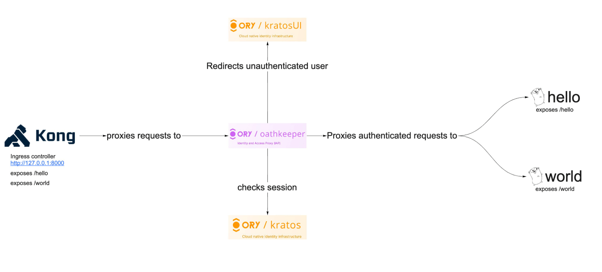
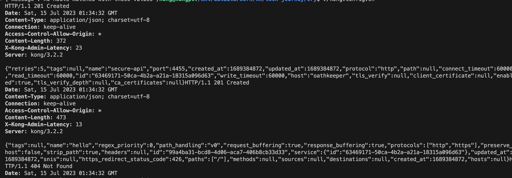
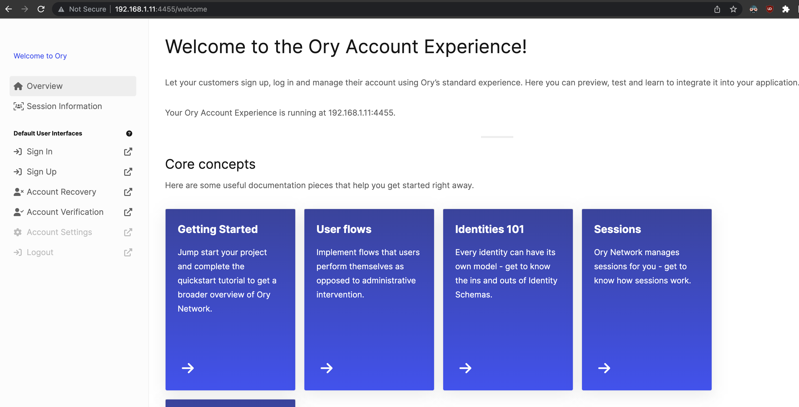
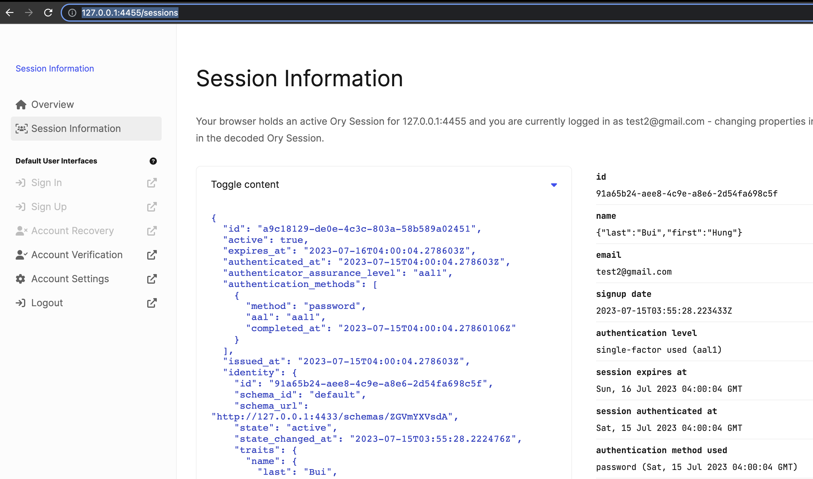
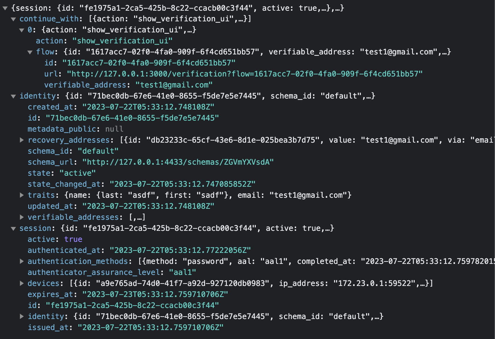

API Gateway using Kong, Ory Kratos & Ory Oathkeeper
Reference: https://www.ory.sh/zero-trust-api-security-ory-tutorial/

Overview
-
Kong gateway can be an excellent solution for an ingress load balancer and API gateway if you do not want vendor lock-in of any cloud API Gateways in your application. Kong uses OpenResty and Lua. OpenResty extends Nginx with Lua scripting to use Nginx's event model for non-blocking I/O with HTTP clients and remote backends like PostgreSQL, Memcached, and Redis. OpenResty is not an Nginx fork, and Kong is not an Openresty fork. Kong uses OpenResty to enable API gateway features.
-
Oathkeeper acts like an identity and access proxy for our microservices. It allows us to proxy only authenticated requests to our microservices, so we don't need to implement middleware to check authentication. It can also transform requests, for example, convert session auth into JWT for a back-end service.
-
Kratos is the authentication provider; it handles all first-party authentication flows: username/password, forgot password, MFA/2FA, and more. It also provides OIDC/social login capabilities for example, "Login with GitHub".
-
A simple Go HTTP API that exposes /greet endpoint and listens :8090 port.
Request Flow:
Ory Oathkeeper checks the incoming request for presence of ory_kratos_session and does the following steps:
Proxies request to Go HTTP API if the identity check passes in Ory Kratos. Redirects user to the Kratos UI if the identity check fails.
Flow
- User create the database, then modify the value of
KRATOS_DSNin the.envfile. docker/kong-migrationsrun the Kong-related migrations.docker/kratos-migraterun the Kratos-related migrations.- Boot up
docker/helloanddocker/worldmicroservices - Kong container that exposes 8000 port for proxying traffic and 8001 port with admin API.
- User run
./kong.config.shto create a service for Kong and configure routes.
- User open
http://127.0.0.1:8000/helloorhttp://127.0.0.1:8000/worldin your browser and there are two possible scenarios: Flow:oathkeepercheck session againstkratos:4433. - If not authenticated,kratosredirect tokratos-selfservice-ui-node:4455. - If authenticated, You receive {"message": "Hello microservice"} (or "World microservice").

- Check the session information athttp://127.0.0.1:4455/sessions

- You can get an activation linkhttp://localhost:4436 for Mailslurper - a mock Email server.
Prequisites
- Create Postgres database:
- Database Name: kong1
- Database User: kong1
create database kong1;
create user kong1 with password 'kong1';
grant all privileges on database kong1 to kong1;
create database kratos1;
create user kratos1 with password 'kratos1';
grant all privileges on database kratos1 to kratos1;
Run locally
Using docker-compose
Open http://127.0.0.1:8000/hello in your browser and follow the login flowThe docker-compose command builds a go webserver, runs all services, and exposes the following ports:
- HTTP :8001 and SSL :8444 ports for Kong Gateway admin API
- HTTP :8000 and SSL :8444 ports for Kong Gateway Proxy listener
- HTTP :4433 and :4434 are public and admin APIs of Ory Kratos
- HTTP :4436 for Mailslurper
- HTTP :4455 for starting sign-up/login/recovery flows.
Configuring Kong
That command creates an /greet endpoint on secure-api service and creates a reverse proxy for Ory Oathkeeper.
Configuring Ory Oathkeeper
Oathkeeper checks sessions and proxies traffic to our microservice while Kong provides ingress load balancing.
Oauthkeeper need two config files: - Access rules are in yml file - Configuration
Ory Oathkeeper now looks up a valid session in the request cookies, and proxies only authenticated requests. It redirects to login UI if there's no ory_kratos_session cookie available. (defined in the oauthkeeper.yml file)
Configuring Kratos
One config file
Write Identity schema
Reference: https://www.ory.sh/docs/kratos/manage-identities/customize-identity-schema#writing-your-first-custom-identity-schema
The created identity schema is in the file
Kratos Self Service
Reference: https://www.ory.sh/docs/kratos/self-service
Three flow types: - Browser flows for server-side apps - Browser flows for client-side apps - API flows
Browser flows for server-side apps
Your application use the third-party authentication UI.
The browser flow has three stages:
- Initialize and redirect to the third-party authentication UI
- GET the html content from /self-service/login/browser, the header is Accept: text/html.
- Receive HTTP 303 from the server
- The authentication UI render the form
- Authentication UI generate the random token for CSRF token
- Fetch the flowId from /self-service/login/browser with Accept: application/json header
- Fetch the form data from /self-service/login/flows?id=$flowId
- The authentication UI submit form and perform the payload validation
- Submit to /self-service/login/flows?id=$theFlowI
- Your application receive the session cookie, user...
Browser flows for client-side apps
Your UI app redirect your own authentication UI.
- Initialization without redirect using an AJAX request to
/self-service/login/browser - Client-side apps render form using HTML
- Client-side apps submit the form as
application/jsonand perform the payload validation
The difference with the server-side app flow is to use Accept: application/json when calling /self-service/login/browser at the first step.
Enable Social sign-in
Open the kratos.yml file, add config in selfservice > methods > oidc
API flows
- Initialization without redirect and cookies
/self-service/login/api - Form rendering using for example native iOS, Android, ... components;
- Form submission as `application/json`` and payload validation.
Registration
After
